Iterative Molecular Discovery with interpretable Deep Learning
Andrew White
University of Rochester
Department of Chemical Engineering
University of Strathclyde🥃
March, 2022
The Whitelab
Topics
- Equivariances & Representation💎
- Predicting Chemical Shifts with GNNs📊
- AI-directed Iterative Design of Peptides🔭
- XAI with Counterfactuals🔦
✨deep learning✨
Given $\vec{x}$ and $y$, find a function $\hat{f}(\vec{x})$ that predicts $\hat{y}$
\[ \hat{y} = \sigma\left(\mathbf{W}X + b\right) \]- $\sigma$ non-linear activation
- $\mathbf{W}$ trainable weights
- $\mathbf{W}$ trainable bias
A book on it: dmol.pub
Example of a Neural Network
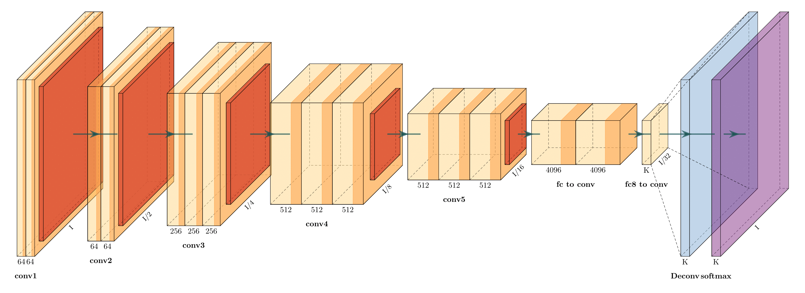What is possible with
\[ \hat{y} = \sigma\left(\mathbf{W}X + b\right) \]$x$ is "Robot doing chemistry", $y$ is image
Model: VQGAN+CLIP
$x$ is "Robot doing chemistry", $y$ is image
Model: VQGAN+CLIP
Brief Principles of Deep Learning for Molecules
Inductive Bias
Explicit choices made in architecture that reflect data-generation or solution space.
Inductive Bias
Explicit choices made in architecture that reflect data-generation or solution space. physics
Inductive Bias
Mol Graph
Point Cloud

Inductive Bias
Mol Graph
- atom permutation equivariance
- bond permutation equivariance
Point Cloud
- atom permutation equivariance
- translation equivariance
- rotation equivariance
Inductive Bias
Mol Graph
- atom permutation equivariance
| C | O | N | $\hat{f}(x)$ | |
|---|---|---|---|---|
| 0 | 1 | 0 | 0 | 0.3 |
| 1 | 1 | 0 | 0 | 0.8 |
| 2 | 1 | 0 | 0 | 0.1 |
| 3 | 1 | 0 | 0 | 0.0 |
| 4 | 1 | 0 | 0 | 0.0 |
| 5 | 1 | 0 | 0 | 0.0 |
| 6 | 1 | 0 | 0 | 0.2 |
| 7 | 1 | 0 | 0 | 0.5 |
| 8 | 1 | 0 | 0 | 0.9 |
| 9 | 1 | 0 | 0 | 0.6 |
| 10 | 0 | 1 | 0 | 0.3 |
Inductive Bias
Mol Graph
- atom permutation equivariance
| C | O | N | $\hat{f}(x)$ | |
|---|---|---|---|---|
| 3 | 1 | 0 | 0 | 0.0 |
| 1 | 1 | 0 | 0 | 0.8 |
| 2 | 1 | 0 | 0 | 0.1 |
| 0 | 1 | 0 | 0 | 0.3 |
| 4 | 1 | 0 | 0 | 0.0 |
| 5 | 1 | 0 | 0 | 0.0 |
| 6 | 1 | 0 | 0 | 0.2 |
| 7 | 1 | 0 | 0 | 0.5 |
| 8 | 1 | 0 | 0 | 0.9 |
| 9 | 1 | 0 | 0 | 0.6 |
| 10 | 0 | 1 | 0 | 0.3 |
Inductive Bias
Example
Point Cloud
- atom permutation equivariance
- translation equivariance
- rotation equivariance
Representation and Model Decisions
SMILES
CCCC1=CC=CC=C1C(=O)
N2CCCC[C@H]2C3CCCC3
Sequence Network
(1D Conv, RNN, Transformer)
Mol Graph
Graph Neural Networks
Points
Equivariant Neural Networks
Representation and Model Decisions
SMILES
Preferred
Mol Graph
If you must
Points
Avoid
The Power of Text
Text is excellent at predicting scalars — invariant to permutations.* Training is fast, implementations are easy, available in javascript🚀
Predicting Chemical Shifts with GNNs📊
Yang, Z., Chakraborty, M. & White, A. D. Predicting chemical shifts with graph neural networks. Chemical Science (2021).
Why?
To infer an ensemble of conformations from shifts $\vec{\delta} = \{\delta_0,\ldots,\delta_i\}$, we need to compare a single conformation $\vec{r}$ via
\[ f(\vec{r}) = \vec{\delta} \]where $f$ is differentiable wrt $\vec{r}$ and depends on non-bonded interactions.
Inductive Bias
- Chemical shift is per-atom. Need perm equivariance
- Chemical shift should be position dependent
- Chemical shift should not use descriptors to generalize
Inductive Bias
- Chemical shift is per-atom. Need perm equivariance
- Chemical shift should be position dependent
- Chemical shift should not use descriptors to generalize
Graph Neural Network with Relative Distances
Graph Neural Network with Relative Distances
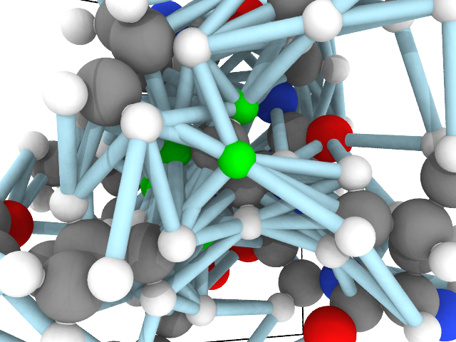Graph Neural Network
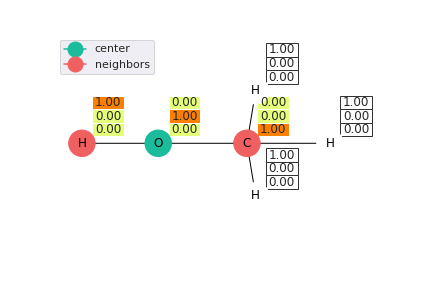Graph Neural Network
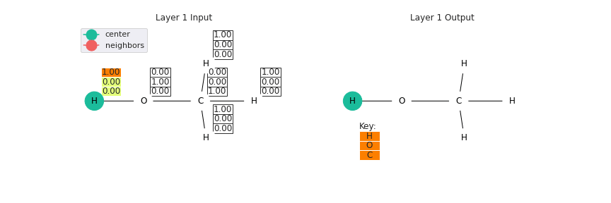Graph convolutional neural network example.
Graph Neural Network Architecture (structure of $f(\vec{r})$)
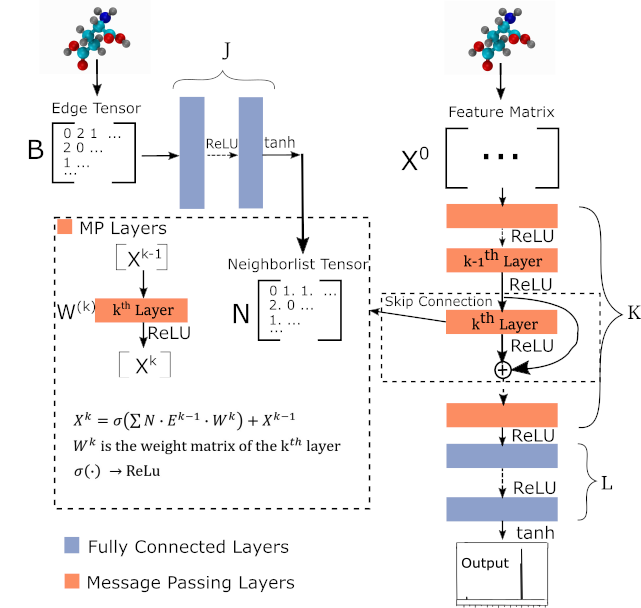Parameters
- 2,262 proteins, 361 metabolite molecules
- 5 million chemical shifts (526,000 fragments)
- Network Size: 3 edge FC layers (tanh), 4 GCN (relu), 3 FC Layers (tanh)
- Withheld 20,000 fragments (180,000 chemical shifts)
- Adam optimizer (0.001), huber loss, 0.15 dropout, 128 node feature dim, 4 edge feature dim
Results on Proteins
| H RMSD | H \(r\) | H\(^\alpha\) RMSD | H\(^\alpha\) \(r\) | Parameter Number | |
|---|---|---|---|---|---|
| Label Variance | 0.176 | 0.965 | 0.138 | 0.967 | |
| Model (H) | 0.459 | 0.781 | 0.264 | 0.878 | 1,185,437 |
| H RMSD | H \(r\) | H\(^\alpha\) RMSD | H\(^\alpha\) \(r\) | Parameter Number | |
|---|---|---|---|---|---|
| Label Variance | 0.176 | 0.965 | 0.138 | 0.967 | |
| Model (H) | 0.459 | 0.781 | 0.264 | 0.878 | 1,185,437 |
| SHIFTX+ | 0.455 | 0.787 | 0.248 | 0.890 | |
| CS2Backbone | 0.716 | 0.418 | 0.417 | 0.708 |
| H RMSD | H \(r\) | H\(^\alpha\) RMSD | H\(^\alpha\) \(r\) | Parameter Number | |
|---|---|---|---|---|---|
| Label Variance | 0.176 | 0.965 | 0.138 | 0.967 | |
| Model (H) | 0.459 | 0.781 | 0.264 | 0.878 | 1,185,437 |
| Model (all) | 0.527 | 0.718 | 0.293 | 0.844 | 1,185,437 |
| Medium | 0.511 | 0.712 | 0.290 | 0.848 | 297,181 |
| Small | 0.501 | 0.726 | 0.288 | 0.849 | 42,123 |
| Weighted | 0.471 | 0.766 | 0.274 | 0.865 | 1,185,437 |
Edge Feature Choice
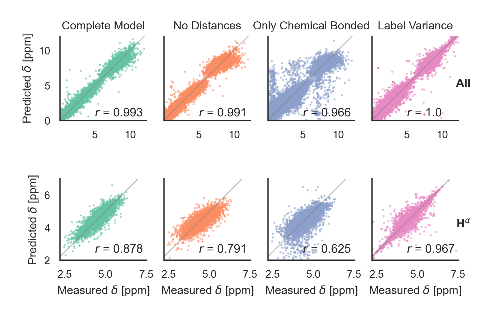Molecule Types

Salt Bridge Sensitivity
Salt Bridge Sensitivity
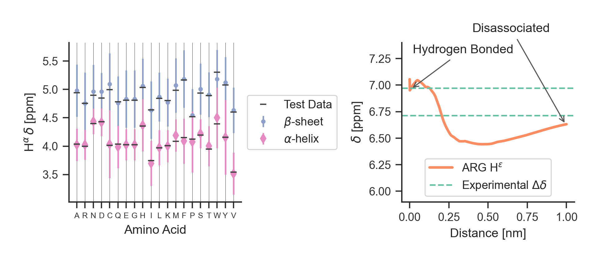pip install nmrgnn
AI-directed Iterative Design of Peptides🔭
Barrett R, White AD. Investigating Active Learning and Meta-Learning for Iterative Peptide Design (2021).
Can we overcome data sparsity in peptide design by incorporating AI at the first experiment?
Learning to learn with peptide design
Can we develop a deep learning network and learning procedure to design across 12 peptide tasks?
- Antimicrobial
- Anticancer
- Antifungal
- Hemolytic
- AntiMRSA
- AntiHIV
- Antiviral
- Antiparasital
- Soluble
- SHP2 Binders
- TULA2 Binder
- Human
Network Architecture
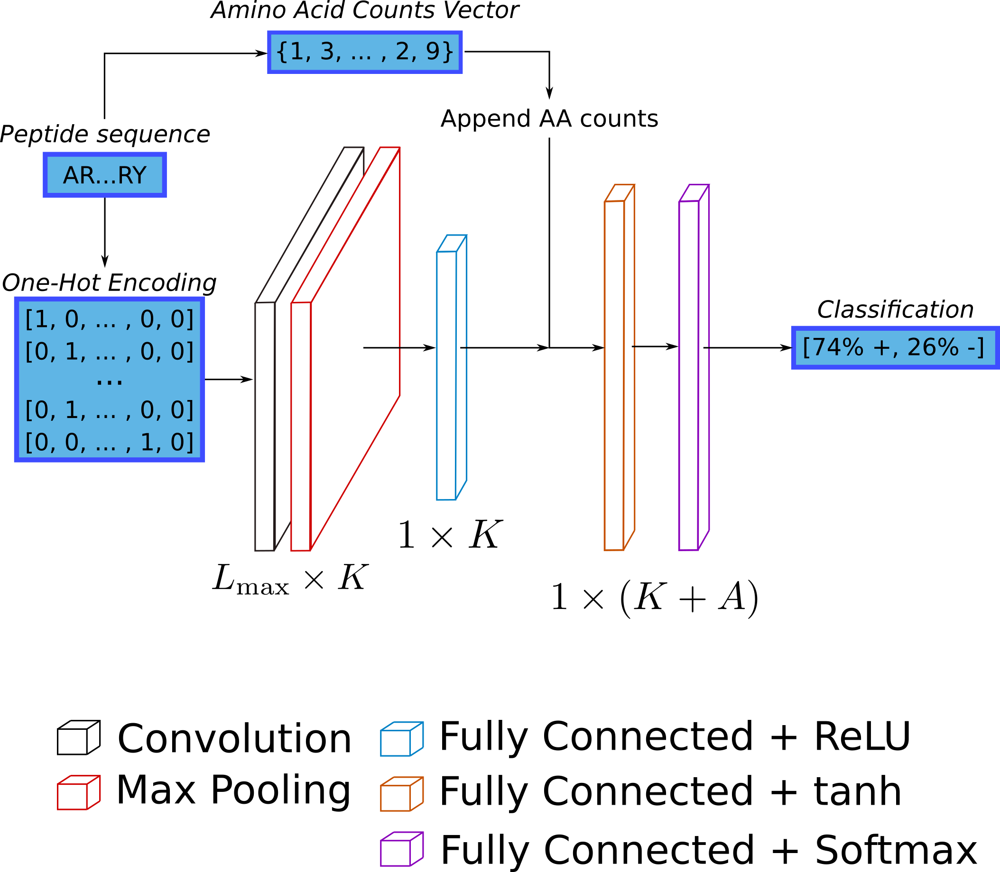Inductive bias: permutation invariance
Deep learning model performance
| Data | Model Accuracy |
|---|---|
| antibacterial | 0.88 |
| anticancer | 0.82 |
| antifungal | 0.87 |
| antiHIV | 0.84 |
| antiMRSA | 0.96 |
| antiparasital | 0.89 |
| antiviral | 0.76 |
| hemolytic | 0.98 |
| soluble | 0.63 |
| shp2 | 0.90 |
| tula2 | 0.83 |
| human | 0.89 |
Active Learning
Can we maximize accuracy after training with 50 examples? Must develop strategy to choose which peptide to use next (utility function/acquisition function)
Uncertainty Minimization Strategy
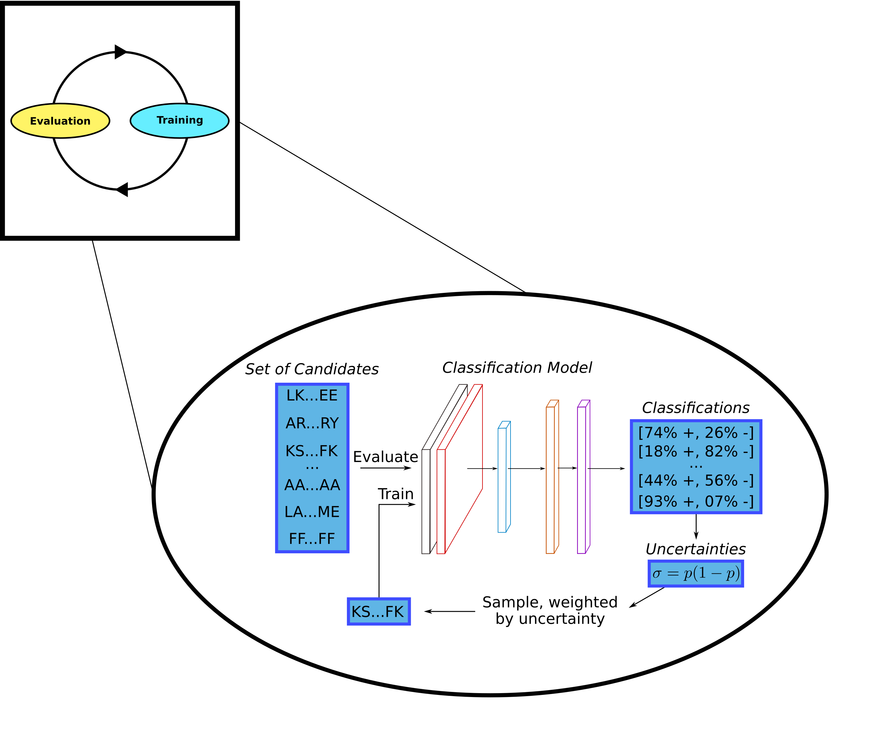Training Curve
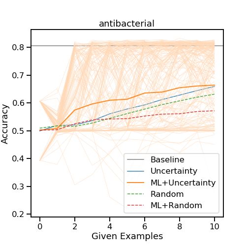Query By Committee Disagreement
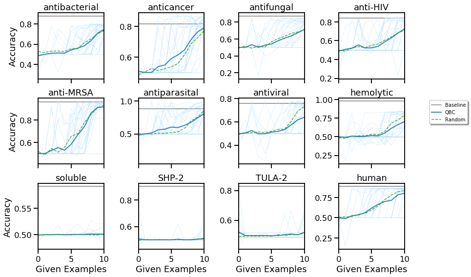No improvement over random
Meta-Learning + Active Learning
Now, we optimize hyperparameters across tasks. Use leave-one-out cross-validation for datasets, early stopping for regularization.
$$ \psi_{j+1} = \psi_j - \eta \nabla_\psi \mathcal{L}\left[U(\psi_j, K)\right] $$- Finn C et. al. 2017 arXiv:1703.03400
- Nichol A et. al. 2018 arXiv:1803.02999
Meta-Learning with Active Learning
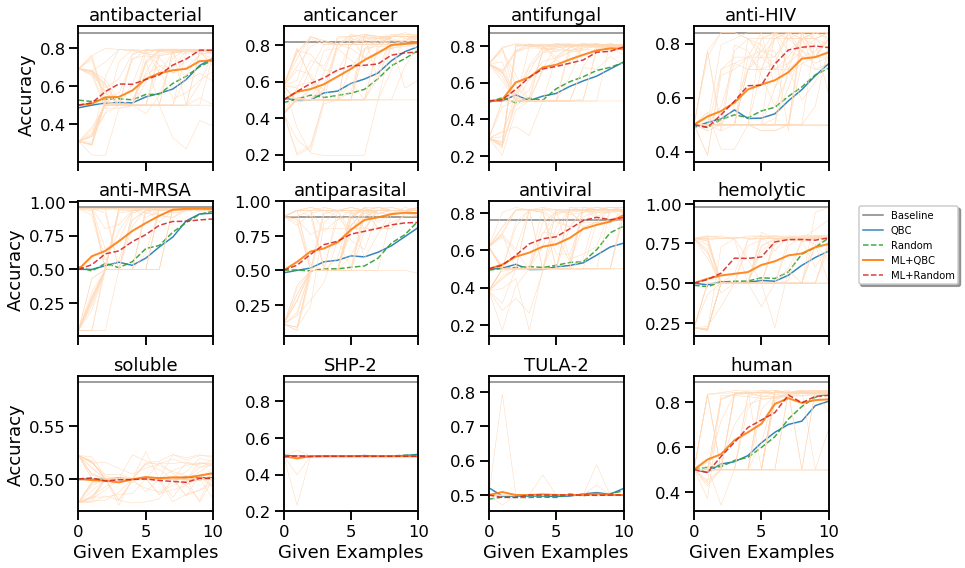Consistently better
More Samples
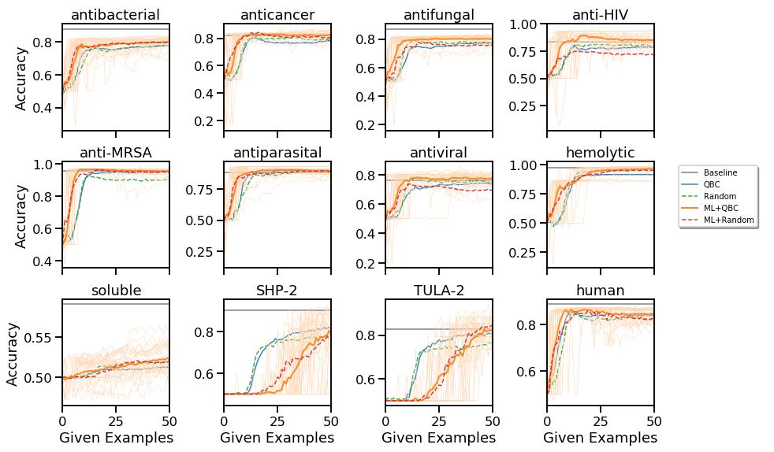Comparing all methods
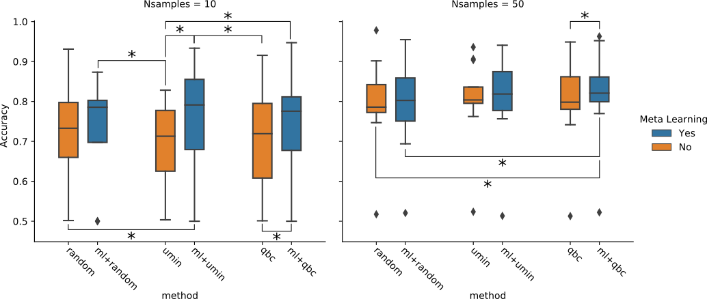Conclusions
- Deep learning provides good performance across many peptide tasks (all greater than 85% accuracy, many above 95%)
- Meta-learning allows improved accuracy by leveraging past data. Very important at 10 examples
- Active learning can be a successful strategy for choosing which peptide to test, significantly so when combined with meta-learning and at 50 examples
XAI with Counterfactuals🔦
Wellawatte, G. P., Seshadri, A. & White, A. D. Model agnostic generation of counterfactual explanations for molecules. (2021).
What is an explanation of a prediction?
- Justification: reasoning for using a prediction, like test error
- Interpretability: "the degree to which an observer can understand the cause of a decision"
- Explanation: a presentation of information intended for humans that give the context and cause for a prediction
Instance Explanations
- Feature Explanation: which features contributed most to outcome?
- Contrastive Explanation: what would the outcome be if the features were different?
- Counterfactual Explanation: what are the closest features with a different outcome?
Counterfactual
My grant proposal was rejected from NSF. If I had correctly formatted my references, it would have been funded.
Chemistry Counterfactual
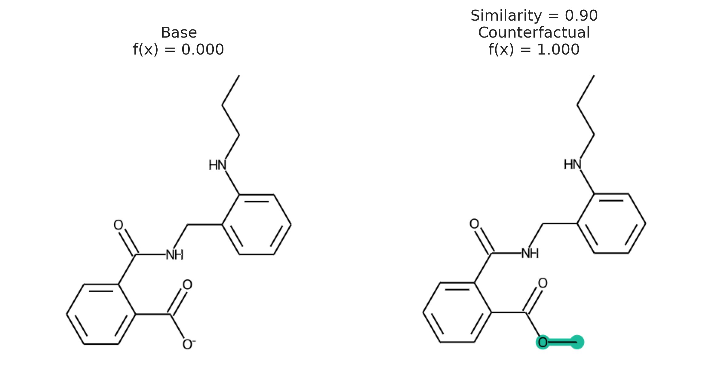Counterfactuals are solution to optimization. Given prediction $x,\hat{f}(x)$, find $x'$ with
\begin{aligned} \texttt{minimize}&\quad d(x, x')\\ \texttt{such that}&\quad \hat{f}(x) \neq \hat{f}(x') \end{aligned}
Challenging because optimization requires $\nabla_x\hat{f}(x)$
Use STONED Method to enumerate chemical spcae
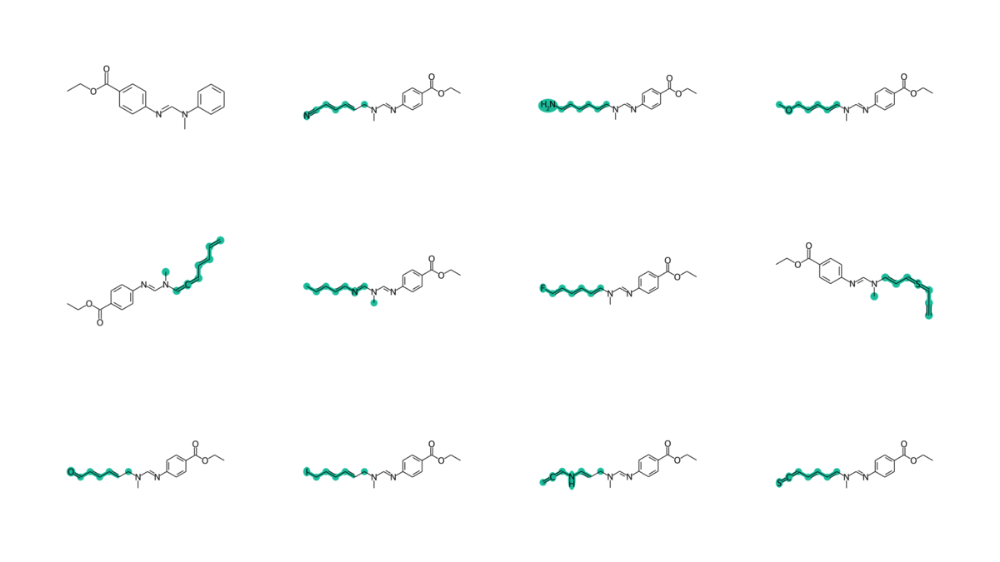Output

pip install exmol